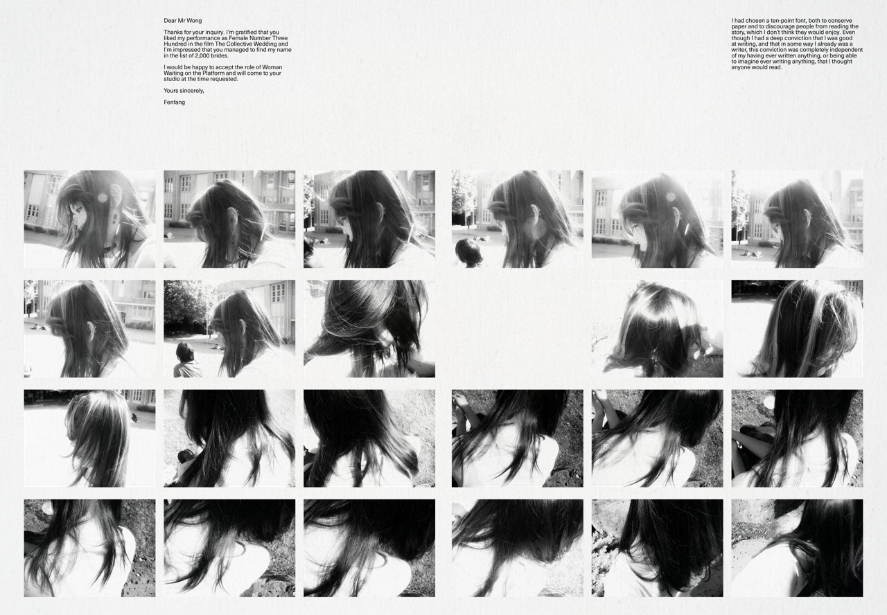
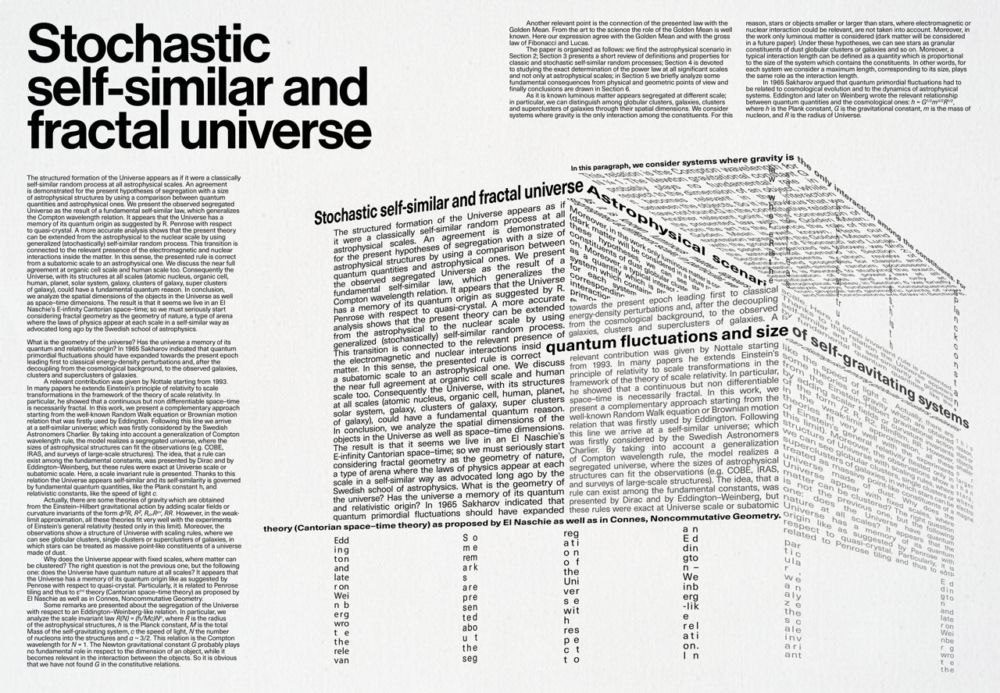
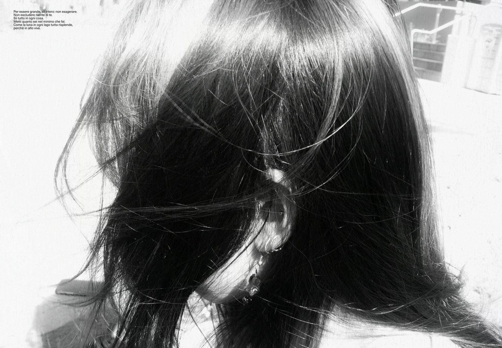
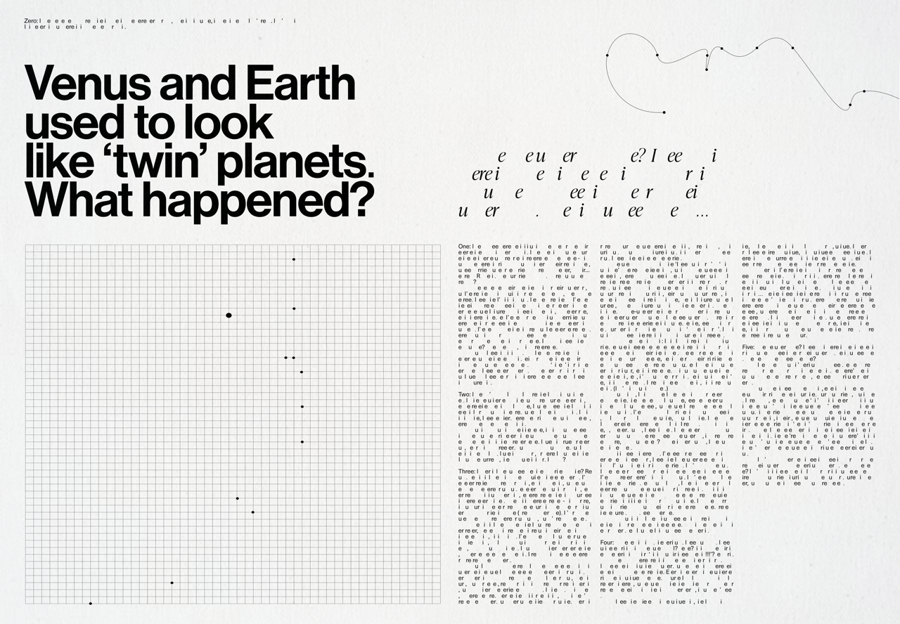
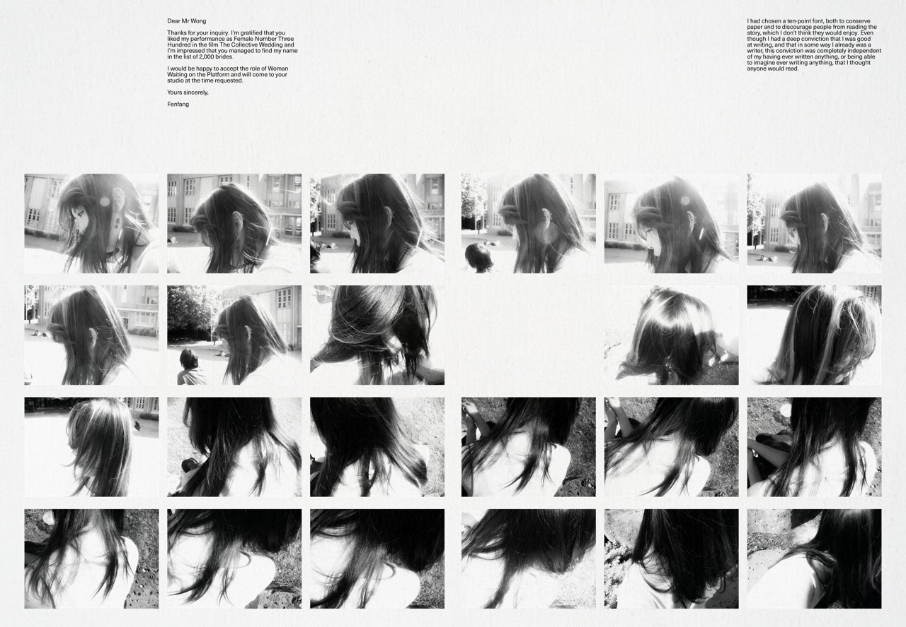
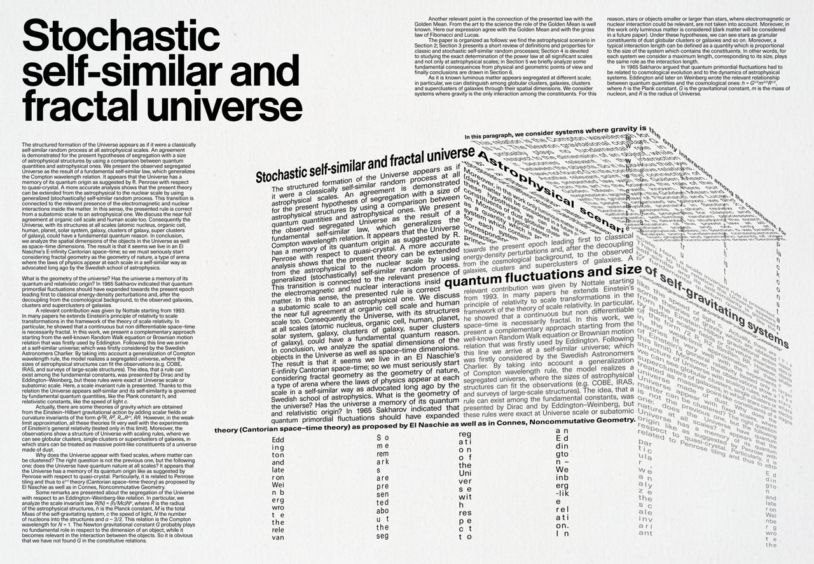
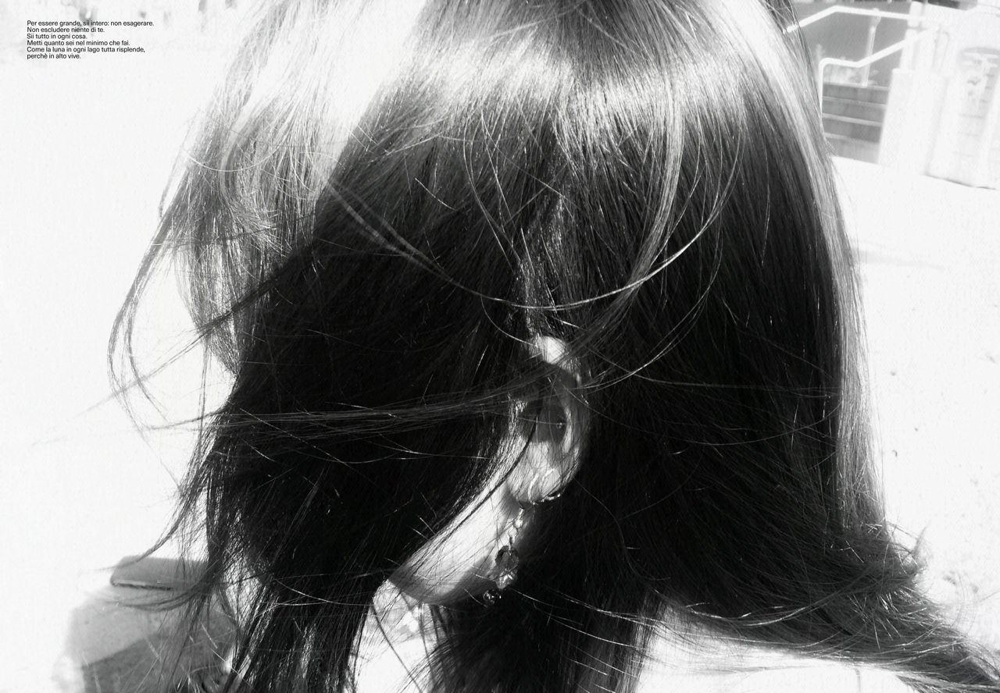
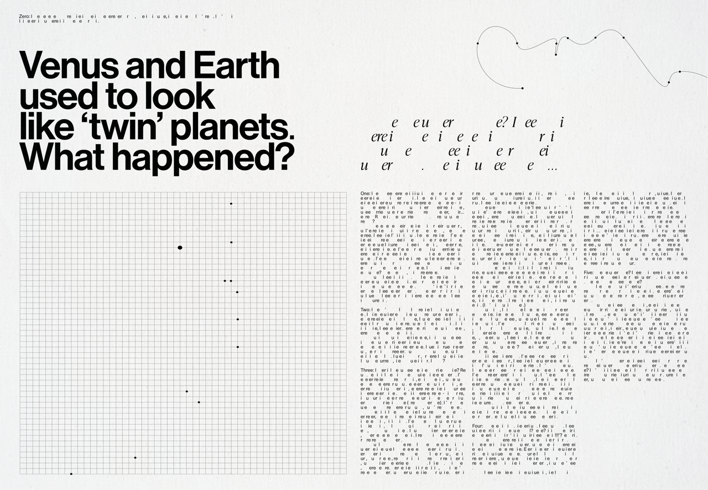

Phoebe Li Portfolio
Application for MC250
Master of Communication Design
Semester 2, 2025
COUNTERPART
Next: Corporeal
Photography
Publication
Typography
An experimental newspaper exploring the notion of existing as a constituent of a whole, reflecting on my lived experience of twinhood. It contemplates the balance between symmetry and duality; my sense of self is at once distinct and deeply linked to another. I consider how this dynamic connects with a broader narrative - one where twin identity is often misunderstood, oversimplified, and commodified by the wider world. The newspaper format serves as a vessel that mirrors this accessibility and misinterpretation of twinhood in popular culture, highlighting the tension of information that exists both revealed and concealed.
 






